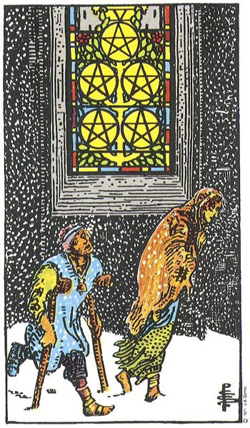

两名困顿者走过彩窗下方，教堂内有光却似未被看见，表现物质匮乏、羞耻与近在身边的援助。
象征推演：细看教堂：有窗，却没有门——是有帮助没去找，是看见了却拒绝进入，还是求援被拒？伟特另提一义：风雪中相互扶持的爱侣，贫贱夫妻百事哀，仍不离弃。
风雪中的人物感到资源不足与孤立，而亮灯窗户提示帮助可能比想象更近。困难真实存在，求助也是现实能力。
一种解法是困难开始缓解，你看见支持并愿意接受帮助，恢复仍需稳步进行；另一种则相反——逆境加深，援手更隐而不见，甚至无人伸出。无论哪种，都不必急着证明完全无事。
学习提示：星币五既讲困难，也讲困境中没有看见或不敢使用的支持。
正位：The card foretells material trouble above all, whether in the form illustrated--that is, destitution--or otherwise. For some cartomancists, it is a card of love and lovers-wife, husband, friend, mistress; also concordance, affinities. These alternatives cannot be harmonized.
逆位：Disorder, chaos, ruin, discord, profligacy.
出处：A.E. Waite《The Pictorial Key to the Tarot》(1910)，公有领域。古典断语反映二十世纪初的读法，与上方现代心理向解读互为古今对照；重大议题请以自我觉察为先，牌不做医疗/法律/财务建议。
塔塔🔮の心灵疗愈室 · 牌义百科为站内容自留地：中文解读自有，古典断语公有领域署名引用。https://cindysd.github.io/tata-public/